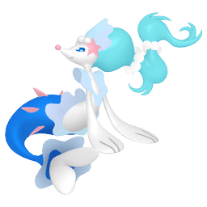
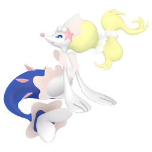

アシレーヌ- ポケモン図鑑チャンピオンズ
アシレーヌは、ポケモンチャンピオンズに登場・内定しています！
| アシレーヌ | |
|---|---|
| ソリストポケモン | |
| 全国No. | 730 |
| 高さ | 1.8m |
| 重さ |
|
| タイプ | |
| 英語名 |
|
| タイプ相性による弱点 | |
| さかさバトルを表示 | |
| 進化の流れ | |


| ◆ アシレーヌの種族値 | |||||
|---|---|---|---|---|---|
| HP | 80(394位) | ||||
| こうげき | 74(777位) | ||||
| ぼうぎょ | 74(651位) | ||||
| とくこう | 126(125位) | ||||
| とくぼう | 116(116位) | ||||
| すばやさ | 60(838位) | ||||
| 平均 / 合計 | 88.3 / 530(341位) | ||||
| ◆ 実数値 | 最高 | 準 | 無振 | 最低 | 最低 (不可) |
| HP | 187 | 187 | 155 | 155 | 140 |
| こうげき | 138 | 126 | 94 | 84 | 71 |
| ぼうぎょ | 138 | 126 | 94 | 84 | 71 |
| とくこう | 195 | 178 | 146 | 131 | 117 |
| とくぼう | 184 | 168 | 136 | 122 | 108 |
| すばやさ | 123 比較 | 112 比較 | 80 比較 | 72 比較 | 58 比較 |
| ◆ アシレーヌを倒した時にもらえる努力値 | |||||
| HP | 0 | ||||
| こうげき | 0 | ||||
| ぼうぎょ | 0 | ||||
| とくこう | 3 | ||||
| とくぼう | 0 | ||||
| すばやさ | 0 | ||||
| ◆ その他のデータ | |||||
| ゲットしやすさ | 45 | ||||
| 初期なかよし度 | 50 | ||||
| 基礎経験値 | 265 | ||||
| 経験値タイプ | 105万(育ちがやや遅い) | ||||
| 色 | 青 | ||||
| 初登場 | 第7世代 / サンムーン | ||||
| カテゴリー | 一般ポケモン | ||||
| ◆ アシレーヌの性別とタマゴ | |||||
| 性別 | ♂:87.5% / ♀:12.5% | ||||
| タマゴ歩数 | 3855〜4111歩 (サイクル:15) | ||||
| タマゴグループ | 水中1 / 陸上 | ||||
| ◆ アシレーヌの特性(とくせい) | |||||
| げきりゅう | HPが1/3以下の時、『みず』タイプの攻撃技を使用した時の『こうげき』『とくこう』が1.5倍になる。 | ||||
| ◆ アシレーヌの隠れ特性(夢特性) | |||||
| *うるおいボイス | 自分の音系の技『いにしえのうた』『いびき』『いやしのすず』『いやなおと』『うたう』『うたかたのアリア』『エコーボイス』『おしゃべり』『おたけび』『きんぞくおん』『くさぶえ』『さわぐ』『スケイルノイズ』『すてゼリフ』『チャームボイス』『ちょうおんぱ』『とおぼえ』『ないしょばなし』『なきごえ』『バークアウト』『ハイパーボイス』『ばくおんぱ』『ほえる』『ほろびのうた』『むしのさざめき』『りんしょう』『ソウルビート』『オーバードライブ』『ぶきみなじゅもん』『フレアソング』『みわくのボイス』『サイコノイズ』の『タイプ』がすべて『みず』タイプになる。 | ||||
| ◆ アシレーヌの色違い | |
|---|---|
| 通常色 | 色違い |
 |  |
| 髪が水色→黄色、装飾が薄桃に。 | |

| [詳細非表示]◆ アシレーヌが覚える技 | |||||||
|---|---|---|---|---|---|---|---|
| タイプ | 分類 | 威力 | 命中 | PP | 接触 | 説明 | |
SV 剣盾 | |||||||
| ノーマル | 物理 | 150 | 90 | 5 | ○ | 使用した次のターンは行動できない。 | |
SV | |||||||
| ノーマル | 物理 | 85 | 100 | 15 | ○ | 30%の確率で相手を『まひ』状態にする。相手が技『ちいさくなる』を使用していると必ず命中し、威力が2倍になる。 | |
SV 剣盾 | |||||||
| ノーマル | 物理 | 70 | 100 | 20 | ○ | 自分が『どく』『まひ』『やけど』状態の時、威力が2倍になる。『やけど』による『こうげき』の半減の影響を受けない。 | |
SV 剣盾 | |||||||
| ノーマル | 特殊 | 150 | 90 | 5 | × | 使用した次のターンは行動できない。 | |
SV 剣盾 | |||||||
| ノーマル | 特殊 | 90 | 100 | 10 | × | 相手全体が対象。音系の技。相手の『みがわり』状態を貫通する。 | |
SV 剣盾 | |||||||
| ノーマル | 特殊 | 90 | 100 | 10 | × | 3ターン連続で攻撃し、その間はすべてのポケモンが『ねむり』状態にならない。音系の技。相手の『みがわり』状態を貫通する。 | |
剣盾 | |||||||
| ノーマル | 特殊 | 60 | 100 | 15 | × | 同じターンに他のポケモンも『りんしょう』を使おうとすると、『すばやさ』に関係なく最初に使用したポケモンに続いて使用でき、最初以外の『りんしょう』は威力が2倍になる。音系の技。相手の『みがわり』状態を貫通する。(ダブルバトル用) | |
SV 剣盾 | |||||||
| ノーマル | 特殊 | 50 | 100 | 10 | × | 天気が『にほんばれ』の時は『ほのお』タイプ、『あめ』の時は『みず』タイプ、『ゆき』の時は『こおり』タイプ、『すなあらし』の時は『いわ』タイプになり、威力が2倍になる。ダイマックス技や第7世代のZワザもタイプが変わる。 | |
剣盾 | |||||||
| ノーマル | 特殊 | 50 | 100 | 15 | × | 自分が『ねむり』状態の時のみ使用可能。30%の確率で相手をひるませる。音系の技。相手の『みがわり』状態を貫通する。 | |
SV 剣盾 | |||||||
| ノーマル | 変化 | - | - | 20 | × | 必ず先制できる(優先度:+5)。使用したターンの間、味方の技の威力を1.5倍にする。 | |
SV | |||||||
| ノーマル | 変化 | - | - | 10 | × | 相手の能力ランクの変化を、すべて自分にコピーする。 | |
SV 剣盾 | |||||||
| ノーマル | 変化 | - | 100 | 5 | × | 3ターンの間、相手は最後に使用した技しか使えなくなる。ただし、PPが0になると解除される。相手の技が『ものまね』『ゆびをふる』『オウムがえし』『へんしん』『わるあがき』『スケッチ』『ねごと』『アンコール』『しぜんのちから』『ねこのて』『さきどり』『まねっこ』『ダイマックスほう』『バーンアクセル』『ダークアクセル』『ポイズンアクセル』『ファイトアクセル』『マジカルアクセル』の場合は失敗する。ダイマックスしているポケモンには無効。なお、ダイマックス技や第7世代のZワザは影響を受けずに使うことができる。 | |
SV 剣盾 | |||||||
| ノーマル | 変化 | - | - | 10 | × | 自分が『ねむり』状態の時のみ使用可能。自分の持っている技のうち1つをランダムで使う。PPが減少するのはこの技のみ。 | |
剣盾 | |||||||
| ノーマル | 変化 | - | 100 | 15 | × | 相手が自分とは異なる性別の場合、相手を『メロメロ』状態にする。『メロメロ』状態になると、50%の確率で相手は自分に攻撃できなくなる。自分と相手の性別が同じ時や、どちらかが性別不明の場合は失敗する。 | |
SV 剣盾 | |||||||
| ノーマル | 変化 | - | - | 10 | × | 必ず先制できる(優先度:+4)。そのターンに『ひんし』状態になる攻撃を受けてもHPが1残る。連続で使うと失敗しやすくなる。具体的には、最初は成功するが、使う度に成功率が1/3になっていく(失敗するとリセットされる)。 | |
SV 剣盾 | |||||||
| ノーマル | 変化 | - | - | 5 | × | 3ターン終了後に、この技を使った時に出ていた自分を含むすべてのポケモンは『ひんし』状態になる。それまでに交代したポケモンは効果が消える。音系の技。相手の『みがわり』状態を貫通する。 | |
SV 剣盾 | |||||||
| ノーマル | 変化 | - | - | 10 | × | 必ず先制でき(優先度:+4)、そのターンの間、相手の技を受けない。連続で使うと失敗しやすくなる。具体的には、最初は成功するが、使う度に成功率が1/3になっていく(失敗するとリセットされる)。ダイマックス技や第7世代のZワザの攻撃技は貫通し、1/4のダメージを受ける。 | |
SV 剣盾 | |||||||
| ノーマル | 変化 | - | - | 10 | × | 自分のHPを最大HPの1/4だけ減らして、減らしたHPと同じHPの自分の分身を作り、分身のHPが0になるまですべての攻撃を自分の代わりに分身が受ける。分身は状態異常にならない。ただし、音系の技などはそのまま受ける。相手のダイマックス技も防げるが、自分がダイマックスすると分身が消える。 | |
SV 剣盾 | |||||||
| ノーマル | 変化 | - | 55 | 15 | × | 相手を2〜4ターン(実質1〜3ターン)の間『ねむり』状態にする。音系の技。相手の『みがわり』状態を貫通する。 | |
SV 剣盾 | |||||||
| くさ | 特殊 | 90 | 100 | 10 | × | 10%の確率で相手の『とくぼう』ランクを1段階下げる。 | |
SV 剣盾 | |||||||
| みず | 物理 | 85 | 100 | 10 | ○ | 20%の確率で、相手の『ぼうぎょ』ランクを1段階下げる。 | |
剣盾 | |||||||
| みず | 物理 | 80 | 100 | 10 | ○ | 1ターン目に水中へ潜り、2ターン目に攻撃する。水中にいる間は『なみのり』『うずしお』以外の技を受けない。 | |
SV 剣盾 | |||||||
| みず | 物理 | 80 | 100 | 15 | ○ | 20%の確率で相手をひるませる。 | |
SV 剣盾 | |||||||
| みず | 物理 | 60 | 100 | 20 | ○ | 攻撃後、手持ちのポケモンと入れ替わる。 | |
SV 剣盾 | |||||||
| みず | 物理 | 40 | 100 | 20 | ○ | 必ず先制できる(優先度:+1)。 | |
SV 剣盾 | |||||||
| みず | 特殊 | 150 | 90 | 5 | × | 使用した次のターンは行動できない。 | |
SV 剣盾 | |||||||
| みず | 特殊 | 110 | 80 | 5 | × | 通常攻撃。 | |
SV 剣盾 | |||||||
| みず | 特殊 | 90 | 100 | 10 | × | 自分以外全員が対象。相手の『やけど』状態を治す。音系の技。相手の『みがわり』状態を貫通する。 | |
SV 剣盾 | |||||||
| みず | 特殊 | 90 | 100 | 15 | × | 自分以外全員が対象。相手が『ダイビング』を使っている時でも命中し、ダメージが2倍になる。 | |
SV | |||||||
| みず | 特殊 | 60 | 100 | 20 | × | 20%の確率で相手を1〜4ターンの間『こんらん』状態にする。 | |
SV | |||||||
| みず | 特殊 | 50 | 100 | 20 | × | 100%の確率で相手の『こうげき』ランクを1段階下げる。 | |
SV 剣盾 | |||||||
| みず | 特殊 | 35 | 85 | 15 | × | 4〜5ターンの間、毎ターン終了後最大HPの1/8のダメージを与え、その間『ゴースト』タイプではない相手は逃げたり交代できない。相手が『ダイビング』を使っている時でも命中し、ダメージが2倍になる。 | |
SV 剣盾 | |||||||
| みず | 変化 | - | - | 10 | × | 自分と味方全体のHPをそれぞれ最大HPの1/4ずつ回復する。特性『ちょすい』『よびみず』の味方は特性が発動するため、この技の効果は無効。この技は『ダイウォール』の効果も受けない。 | |
SV 剣盾 | |||||||
| みず | 変化 | - | - | 20 | × | 使用後、毎ターン、HPが最大HPの1/16ずつ回復する。 | |
SV 剣盾 | |||||||
| みず | 変化 | - | - | 5 | × | 5ターンの間、天気を『あめ』にする。『みず』タイプの技のダメージが1.5倍になり、『ほのお』タイプの技のダメージが半減する。 | |
SV 剣盾 | |||||||
| ひこう | 物理 | 55 | 100 | 15 | ○ | 自分が道具を持っていない時、威力が2倍になる。 | |
SV | |||||||
| こおり | 物理 | 80 | 100 | 15 | ○ | 場の状態『グラスフィールド』『ミストフィールド』『エレキフィールド』『サイコフィールド』を解除し、元に戻す。 | |
SV 剣盾 | |||||||
| こおり | 物理 | 20 | 90 | 10 | ○ | 1ターンに外れるまで最大3回連続で攻撃する。攻撃が当たる度に威力が20ずつ増える。 | |
SV 剣盾 | |||||||
| こおり | 特殊 | 110 | 70 | 5 | × | 相手全体が対象。10%の確率で相手を『こおり』状態にする。天気が『ゆき』の時は必ず命中する。 | |
SV 剣盾 | |||||||
| こおり | 特殊 | 90 | 100 | 10 | × | 10%の確率で相手を『こおり』状態にする。 | |
SV 剣盾 | |||||||
| こおり | 特殊 | 55 | 95 | 15 | × | 相手全体が対象。100%の確率で相手の『すばやさ』ランクを1段階下げる。 | |
SV | |||||||
| こおり | 変化 | - | - | 10 | × | 5ターンの間、天気を『ゆき』にする(『こおり』タイプのポケモンは、『ぼうぎょ』が1.5倍になる)。 | |
SV | |||||||
| こおり | 変化 | - | - | 30 | × | すべてのポケモンの能力ランクの変化を元に戻す。 | |
SV 剣盾 | |||||||
| エスパー | 特殊 | 90 | 100 | 10 | × | 10%の確率で相手の『とくぼう』ランクを1段階下げる。 | |
SV | |||||||
| エスパー | 特殊 | 75 | 100 | 10 | × | 100%の確率で、相手は2ターンの間『かいふくふうじ』状態となり、回復系の技『あさのひざし』『いやしのねがい』『いやしのはどう』『ウッドホーン』『かいふくしれい』『ギガドレイン』『きゅうけつ』『こうごうせい』『じこさいせい』『じょうか』『すいとる』『すなあつめ』『タマゴうみ』『ちからをすいとる』『つきのひかり』『デスウイング』『ドレインキッス』『ドレインパンチ』『なまける』『ねがいごと』『ねむる』『のみこむ』『はねやすめ』『パラボラチャージ』『フラワーヒール』『みかづきのまい』『ミルクのみ』『メガドレイン』『ゆめくい』『いのちのしずく』『ジャングルヒール』『みかづきのいのり』『さいきのいのり』『むねんのつるぎ』『シャカシャカほう』が使えなくなり、また特性や道具、場の状態などでHPが回復しなくなる。音系の技。相手の『みがわり』状態を貫通する。 | |
SV 剣盾 | |||||||
| エスパー | 特殊 | 20 | 100 | 10 | × | 自分のいずれかの能力ランクが1つ上がる度に威力が20上がる。 | |
剣盾 | |||||||
| エスパー | 変化 | - | - | 10 | × | 5ターンの間、すべてのポケモンの『ぼうぎょ』と『とくぼう』の能力値が入れ替わる。もう1度使用すると元に戻る。 | |
SV 剣盾 | |||||||
| エスパー | 変化 | - | - | 20 | × | 自分の『とくこう』『とくぼう』ランクが1段階ずつ上がる。 | |
SV 剣盾 | |||||||
| エスパー | 変化 | - | - | 5 | × | HPと状態異常をすべて回復した後、2ターンの間『ねむり』状態になる。 | |
SV 剣盾 | |||||||
| エスパー | 変化 | - | - | 20 | × | 自分の『とくぼう』ランクを2段階上げる。 | |
SV 剣盾 | |||||||
| エスパー | 変化 | - | - | 20 | × | 5ターンの間、相手の物理攻撃のダメージを半分にする。味方が複数の場合は半分ではなく2/3になる。急所に当たった場合は軽減されない。交代しても効果は続く。 | |
SV 剣盾 | |||||||
| エスパー | 変化 | - | - | 30 | × | 5ターンの間、相手の特殊攻撃のダメージを半分にする。味方が複数の場合は半分ではなく2/3になる。急所に当たった場合は軽減されない。交代しても効果は続く。 | |
SV 剣盾 | |||||||
| ゴースト | 特殊 | 80 | 100 | 15 | × | 20%の確率で相手の『とくぼう』ランクを1段階下げる。 | |
剣盾 | |||||||
| はがね | 物理 | 100 | 75 | 15 | ○ | 30%の確率で相手の『ぼうぎょ』ランクを1段階下げる。 | |
SV 剣盾 | |||||||
| フェアリー | 物理 | 90 | 90 | 10 | ○ | 10%の確率で相手の『こうげき』ランクを1段階下げる。 | |
SV 剣盾 | |||||||
| フェアリー | 特殊 | 100 | 100 | 5 | × | 自分以外全員が対象。攻撃後、自分が『ひんし』状態になる。場の状態が『ミストフィールド』で、自分が『ひこう』タイプや特性『ふゆう』などではなく地面にいる時、威力が1.5倍になる。 | |
SV 剣盾 | |||||||
| フェアリー | 特殊 | 95 | 100 | 15 | × | 30%の確率で相手の『とくこう』ランクを1段階下げる。 | |
SV | |||||||
| フェアリー | 特殊 | 80 | 100 | 10 | × | 100%の確率で、そのターンの間に能力ランクが上がった相手ポケモンを1〜4ターンの間『こんらん』状態にする(通常は後攻で攻撃する必要があるが、場に出た時に能力ランクが上がった場合も対象となる)。音系の技。相手の『みがわり』状態を貫通する。 | |
SV 剣盾 | |||||||
| フェアリー | 特殊 | 80 | 100 | 10 | × | 相手全体が対象。通常攻撃。 | |
SV 剣盾 | |||||||
| フェアリー | 特殊 | 50 | 100 | 10 | ○ | 相手に与えたダメージの3/4だけ自分のHPが回復する。 | |
SV 剣盾 | |||||||
| フェアリー | 変化 | - | 100 | 30 | × | 必ず先制できる(優先度:+1)。相手の『こうげき』ランクを1段階下げる。 | |
SV 剣盾 | |||||||
| フェアリー | 変化 | - | - | 10 | × | 5ターンの間、場の状態を『ミストフィールド』にする。『ひこう』タイプや特性『ふゆう』などではない地面にいるすべてのポケモンは、状態異常にならず、また『ドラゴン』タイプの技の受けるダメージが半減する。すでに状態異常の場合は回復しない。また、道具『ミストシード』を持ったポケモンは『とくぼう』ランクが1段階上がる(この効果は、地面にいないポケモンでも発動する)。 | |
SV 剣盾 | |||||||
| フェアリー | 変化 | - | 100 | 20 | × | 相手の『こうげき』ランクを2段階下げる。 | |
| [詳細非表示]◆ その他の過去作で覚える技 | |||||||
[アシマリ:Lv.29(USUM/SM),Lv.33(USUM/SM)] | |||||||
| ノーマル | 物理 | 15 | 85 | 10 | ○ | 1ターンに2〜5回連続で攻撃する。 | |
[Lv.4(USUM/SM)] | |||||||
| ノーマル | 変化 | - | 100 | 40 | × | 相手全体が対象。相手の『こうげき』ランクを1段階下げる。音系の技。相手の『みがわり』状態を貫通する。 | |
[アシマリ:基本(USUM/SM)] | |||||||
| みず | 特殊 | 40 | 100 | 25 | × | 通常攻撃。 | |
[アシマリ:Lv.22(USUM/SM),Lv.24(USUM/SM)] | |||||||
| みず | 特殊 | 65 | 100 | 20 | × | 10%の確率で相手の『すばやさ』ランクを1段階下げる。 | |
[アシマリ:Lv.39(USUM/SM),オシャマリ:Lv.46(USUM/SM),Lv.49(USUM/SM)] | |||||||
| ノーマル | 変化 | - | 100 | 20 | × | 相手全体が対象。相手が自分とは異なる性別の場合、相手の『とくこう』を2段階下げる。自分と相手の性別が同じ時や、どちらかが性別不明の場合は失敗する。 | |
[アシマリ:Lv.8(USUM/SM),オシャマリ:Lv.8(USUM/SM),Lv.9(USUM/SM)] | |||||||
| フェアリー | 特殊 | 40 | - | 15 | × | 相手全体が対象。自分の命中率、相手の回避率に関係なく必ず命中する。音系の技。相手の『みがわり』状態を貫通する。 | |
[技06(USUM/SM)] | |||||||
| どく | 変化 | - | 90 | 10 | × | 相手を『もうどく』状態にする。『もうどく』状態は通常の『どく』状態と違い、受けるダメージが1/16、2/16、3/16・・・と増えていく。『どく』タイプのポケモンが使うと必ず命中する。『どく』タイプや『はがね』タイプには無効。 | |
[技32(USUM/SM)] | |||||||
| ノーマル | 変化 | - | - | 15 | × | 自分の回避率を1段階上げる。 | |
[技87(USUM/SM)] | |||||||
| ノーマル | 変化 | - | 85 | 15 | × | 相手を1〜4ターンの間『こんらん』状態にするが、相手の『こうげき』ランクを2段階上げてしまう。 | |
[技27(USUM/SM)] | |||||||
| ノーマル | 物理 | - | 100 | 20 | ○ | ポケモンがなついているほど威力が高くなる。最大102。 | |
[技21(USUM/SM)] | |||||||
| ノーマル | 物理 | - | 100 | 20 | ○ | ポケモンがなついていないほど威力が高くなる。最大102。 | |
[技10(USUM/SM)] | |||||||
| ノーマル | 特殊 | 60 | 100 | 15 | × | 自分の個体値によって『タイプ』が変わる。(BW2までは威力も個体値によって変化) | |
[マシン35(剣盾),技07(USUM/SM)] | |||||||
| こおり | 変化 | - | - | 10 | × | 5ターンの間、天気を『あられ』にする。『こおり』タイプではないポケモンは、毎ターン最大HPの1/16のダメージを受ける。 | |
[マシン55(剣盾)] | |||||||
| みず | 特殊 | 65 | 100 | 10 | × | 相手のHPが最大HPの半分以下の時、威力が2倍になる。 | |
[技49(USUM/SM)] | |||||||
| ノーマル | 特殊 | 40 | 100 | 15 | × | 毎ターン、誰かが技『エコーボイス』を使う度に威力が高くなっていく。音系の技。相手の『みがわり』状態を貫通する。 | |
[レコ.84(剣盾),技55(USUM/SM)] | |||||||
| みず | 特殊 | 80 | 100 | 15 | × | 30%の確率で相手を『やけど』状態にする。自分が『こおり』状態の時でも使う事ができ、使うと『こおり』状態が治る。また、相手の『こおり』状態を治す。 | |
[レコ.85(剣盾),技01(USUM/SM)] | |||||||
| ノーマル | 変化 | - | - | 30 | × | 自分の『こうげき』『とくこう』ランクが1段階ずつ上がる。 | |
[技100(USUM/SM)] | |||||||
| ノーマル | 変化 | - | - | 20 | × | 相手の『とくこう』ランクを1段階下げる。自分の命中率、相手の回避率に関係なく必ず命中する。相手の『まもる』『みきり』『トーチカ』『ニードルガード』『ブロッキング』『スレッドトラップ』『かえんのまもり』の効果を受けない(『ダイウォール』を除く)。音系の技。相手の『みがわり』状態を貫通する。 | |
[アシマリ:タマゴ技(USUM/SM)] | |||||||
| フェアリー | 変化 | - | - | 20 | × | 味方1体の『とくぼう』を1段階上げる(ダブルバトル用)。この技は『ダイウォール』の効果も受けない。 | |
[教え技(USUM)] | |||||||
| ノーマル | 物理 | 60 | 100 | 25 | ○ | 相手が持っている道具を自分の物にする。自分が既に道具を持っている場合は失敗するが、技『はたきおとす』で自分の道具が無効化されている時は奪う事ができ、道具は上書きされる。トレーナー戦の場合はバトル終了後になくなる。 | |
[教え技(USUM)] | |||||||
| みず | 物理 | 90 | 90 | 10 | ○ | 通常攻撃。 | |
[教え技(USUM)] | |||||||
| エスパー | 変化 | - | - | 15 | × | 必ず先制でき、そのターンの間、自分が受ける変化技を使用した相手に跳ね返す。跳ね返す技の命中率は、『マジックコート』を使用したポケモンで計算される。(優先度:+4) | |
[教え技(剣盾/USUM/SM)] | |||||||
| みず | 特殊 | 80 | 100 | 10 | × | ダブルバトルで、技『ほのおのちかい』と組み合わせて使用すると4ターンの間技の追加効果が出やすくなり、技『くさのちかい』と組み合わせて使用すると4ターンの間相手の『すばやさ』が下がる。また、威力が150になる。この技は、特性『よびみず』の攻撃対象を変更する効果の影響を受けずに攻撃できる。 | |
[専用Zワザ(USUM/SM)] | |||||||
| みず | 特殊 | 195 | - | 1 | × | 『アシレーヌ』の専用Z技。自分の命中率、相手の回避率に関係なく必ず命中する。 | |
関連ポケモン
スポンサーリンク